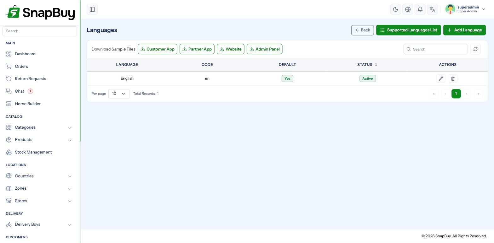

Manage Languages
Menu path: Languages
SnapBuy is fully multi-lingual. Every interface string, and most of your content, can be translated.

A language belongs to one surface
This is the part that surprises people. A language is added for a specific system type:
| System type | Surface |
|---|---|
| 1 | Customer App |
| 2 | Delivery Boy App |
| 3 | Website |
| 4 | Admin Panel |
Adding Hindi once does not add it everywhere
Each surface keeps its own language list and its own translation file. To offer Hindi to customers on both the app and the website, you add it twice — once as a Customer App language, once as a Website language.
Customers reporting "the app is in Hindi but the website is in English" are seeing exactly this.
Adding a language
Languages → Add Language.
| Field | Notes |
|---|---|
| Supported Language | Pick from the built-in list — sets the code and name |
| Display Name | What customers see in the language switcher |
| System Type | Which surface this is for |
| Default | The language used when the customer has not chosen one |
| Status | Inactive languages disappear from the switcher |
The supported-language list is seeded
If the dropdown is empty, the seeder did not run. Visit /supported_language once to populate it.
Translating interface strings
Each language has a JSON file of key/value pairs — the labels, buttons and messages of that surface. Edit them in the panel's JSON editor.
Change values, never keys
The key on the left is what the code looks up. Translate the value on the right only.
Right: "add_to_cart": "कार्ट में जोड़ें"
Wrong: "कार्ट_में_जोड़ें": "कार्ट में जोड़ें" — the label now shows a raw key to every customer.
Preserve placeholders inside strings
Strings containing {app_name}, {amount} or similar must keep them exactly. Translating or removing a placeholder leaves a literal fragment in the customer's message.
Missing keys fall back to the default language
A partly translated language still works — untranslated keys show in the default language. You can ship a language and fill gaps over time.
Content translated elsewhere
Interface strings are only part of it. These are translated on their own screens:
| Content | Where |
|---|---|
| Product names and descriptions | Product edit form, per language |
| Category names | Category form |
| Store name, provider, address | Stores — default language first |
| Zone surge labels and charge names | Zones |
| Home Builder headings and labels | Home Builder |
| Legal policies | Countries |
| Notification, email and SMS wording | Templates |
| Blogs and FAQs | Their own modules |
Several forms require the default language first
Stores and some other records refuse to be created in a secondary language — "Please create store in default language first." Create the record in the default language, then switch and translate.
Changing the default language
The default is the fallback for every untranslated string and every customer who has not chosen one.
Choose the default before launch
Switching later re-points every fallback. Content translated into the old default but never translated into the new one starts falling back to a language your customers may not read.
Right-to-left languages
Arabic, Hebrew, Urdu and Farsi read right to left. Add them like any other language, then check the result on a real device.
Test RTL layouts thoroughly
Long RTL strings routinely overflow buttons and misalign icons designed for left-to-right text. Check the cart, checkout and order tracking screens specifically.
Removing a language
Deactivate rather than delete. Deactivating hides it from the switcher while keeping every translation, so you can bring it back. Deleting discards the work.
Customers already using a removed language
They fall back to the default language on their next launch. If you support a large audience in that language, communicate before removing it.
Troubleshooting
| Symptom | Cause | Fix |
|---|---|---|
| Language missing on one surface | Added for a different system type | Add it again for that surface |
| Supported-language dropdown empty | Seeder not run | Visit /supported_language |
| Raw keys shown instead of text | A key was edited instead of its value | Restore the original key |
{amount} appears literally | Placeholder altered in translation | Restore the exact placeholder |
| Some text still in English | Those keys untranslated | Fill them in the JSON editor |
| Cannot save a record in a second language | Record does not exist in the default language yet | Create it in the default language first |
| Changes not visible | Cached language file | Visit /clear; restart the app |
Checklist
- Language added for every surface that needs it
- Display name written in the language itself
- One default language set per surface
- JSON strings translated, keys and placeholders untouched
- Product, category, policy and template content translated
- RTL layouts checked on a device
- Language switcher tested end to end